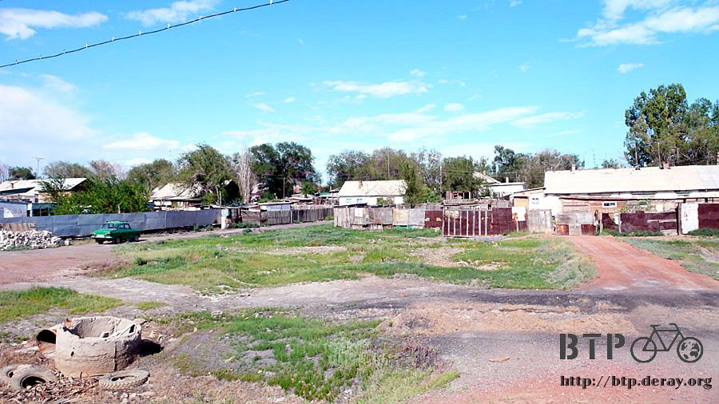
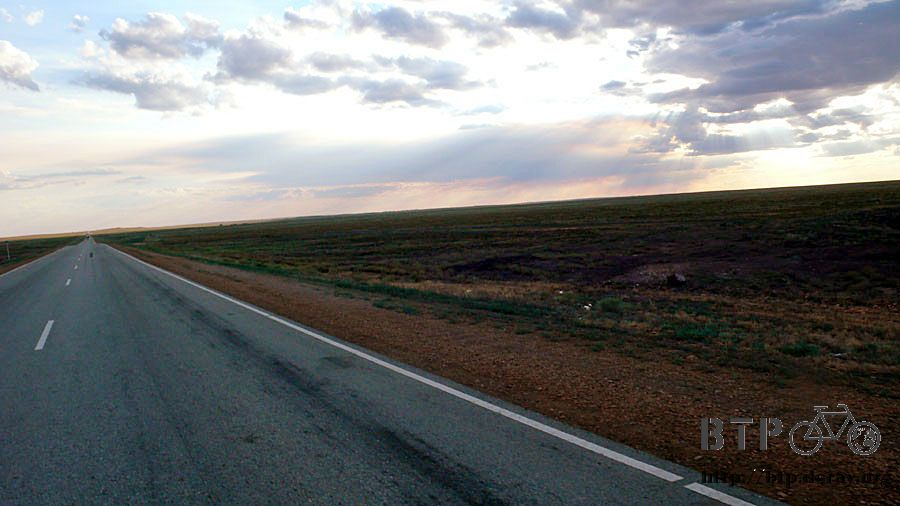

今夜肯定涼快
娜塔莎是店裡最忙的人，一整天都被呼來喚去的，夜裡忙到三點多還在整理廚房，早上又是最早起來賣早餐的。
雖然昨天我睡得很差，又熱又多蒼蠅，但是跟娜塔莎相比，我能夠躺下來休息已經是很不容易的事情了。
家裡沒有麵包了，都被客人給吃光光，想賣早點也是什麼都沒有，一早來光顧的客人都是喝咖啡或是奶茶配著桌上的蛋糕、餅乾、白煮蛋等。
只有我一個人有東西可以吃，娜塔莎特別幫我張羅，早餐喝著沖泡的雀巢咖啡，配著煎蛋和火腿。
昨天睡前拿著不知道從哪邊抓來的大蜘蛛現給我看的發勒哈特，睡醒就沒有看到人，這邊的小孩好像都不用上學一樣，可以成天到處跑。
準備要出發的時候，沒有人肯收早餐的錢，千拜託萬拜託好不容易才把錢塞到媽媽的手裡。
臨走前又塞給我一大條巧克力蛋糕要我帶著路上吃，我也在店裡買了一些零食和飲料當路上的補給。
本來以為越接近大城市，沿路的小鎮跟商家就會越來越多，其實一點也沒有，離開這個小小的傑斯塔，往下又是荒涼的山坡地。
起伏不定的馬路設立的位置沒有說很好，景色很普通，跟拿一台室內健身腳踏車放在路邊騎一樣，怎麼看都是同樣的風景，毫無變化。
偶爾，路面會離大湖近一點，可以看著蔚藍的湖水在陽光中閃爍的畫面，不怎麼發達的鐵路沿著湖邊建設，搭著火車風景一定很漂亮。
有水的地方植物就長的比較茂盛，比人還高的芒草形成一片草原，牛不需要人放牧就會自己在裡面遊走吃草。
草原中的小樹停滿了數不清的小鳥，密密麻麻像要把樹給壓垮一樣，站在路邊撿起一顆石頭使勁的丟過去，絲毫沒有驚嚇到半隻。
有點不甘心，所以就把小多給停好，自己則潛進芒草裡，偷偷摸摸的靠過去。
芒草的葉子很會割人，還好穿著外套跟長褲，但依舊感覺到被鏈鋸般葉子劃過的觸感。
離停滿鳥兒的樹不到五公尺的時候，依然沒有驚動鳥群，用盡吃奶的力氣『哇～！』的大叫一聲，鳥通通都被嚇飛走了。
至少有兩三百隻停在這棵樹上吧，鳥群飛走的時候樹好像瞬間長高了一點。
手錶的天氣預報說今天是多雲的晴朗天氣，看看天空的確是這樣沒錯，朵朵的白雲又大又胖，不時落下陰影帶來片刻的涼爽。
只有在這個時候我才能將帽子跟口罩暫時拿下來，等陽光重新露臉的時候又得乖乖的戴回這些遮陽的裝備。
但臉依然一天比一天黑，跟太陽的競賽是場無所謂的抵抗。
目前位於哈薩克，哈薩克是中亞最大的國家；中亞顧名思義就是亞洲的中間，而現在的位置則是哈薩克的中央部分，
地圖上的星星代表的城市的位置，星星越大就表示城市越繁榮，我真想見識一下哈薩克的繁榮城市是什麼模樣。
見多了荒涼和破爛的小鎮，建築物好像都是上個世紀初留下來的那樣，科技、繁榮、現代這些名詞跟哈薩克都扯不上關係。
過了中午好不容易才出現餐廳可以用餐，順便休息躲太陽，吃飽之後還有更重要的事情，睡午覺。
昨天睡的極差，中午不補眠一下的話，下午騎車會有打瞌睡摔車的危險。
午餐時間，我自己點了奶茶，別人幫我點了馬鈴薯羊肉湯。
奶茶可是要分開點的喔，先點『茶』然後再加一句『牛奶』。
牛奶的哈薩克語發音是『馬拉狗』，因為很好笑，所以聽一便就記在腦海裡了。

吃飯的時候，拿出霍爾果斯買的中文版哈薩克地圖，大家都很有興趣的翻著，並跟我說接下來的路距離有多遠。
在哈薩克旅行，光就騎單車這部分，比我想像的還要容易很多，因為路實在太單純了，就算沒有路名或是告示牌也沒關係。
哈薩克的道路交通建設得並不是很好，也許是因為大家不喜歡到處跑來跑去的關係吧。
今天的目標是前面不到十公里處的小鎮，想去那邊游泳泡清涼的湖水。
在餐廳屋簷下吹風睡了好舒服的午覺，睡醒伸個懶腰，昨天沒睡飽的部分終於補回來了，繼續騎車吧～
十公里之外的這個叫城鎮做『薩雷沙干』，這一路騎過來都有看到它出現在地名的告示牌上，所以應該是個不小而且頗有知名度的地方。
實際騎到之後發現是不小，但就是那個樣子，哈薩克風格的城鎮，矮矮的尖屋頂房子、到處都破破爛爛的感覺、很鄉土氣息。


這邊很流行一種用摩托車改裝的三輪車，在摩托車的右邊加裝一個輪胎和車架，這樣一來要載東西就很方便。
附帶一提，摩托車似乎不需要掛車牌，也沒有騎乘年齡的限制，小鬼頭騎著車揮手經過我是家常便飯。
像這樣比較有規模的城鎮，加油站、餐廳、商店的數量就激增很多，之前在荒野中，難得看到一間附設有商店的加油站就很感動，
現在到處都有反而吸引不了我的興趣，連好久都沒有看到的『HOTEL』招牌都出現了，是在跟我說今天就住在這邊的意思嗎？
今天不想住旅館，想騎到一個沒什麼人的湖邊，找個陰涼處搭帳篷、游泳、洗衣服，露營一個晚上。
所以就沒在這裡落腳，離開繼續往前走，告示牌說下一個小鎮的距離是八十五公里，超級遠～
反正今天又沒有一定要騎那麼遠，只要可以看到湖就繞過去即可。
無奈的是離開薩雷沙干之後，湖的影子就完全消失了，兩邊怎麼看都是荒原，繼續往前騎也是荒原。
又騎了三十公里，湖真的消失不見蹤影，看來今天在湖邊露營的計畫可能要告吹了。
太陽漸漸西下，將目標修正為看到餐廳或是加油站，今天就在該處落腳休息，這樣應該比較容易達成。
結果一路上什麼都沒有，荒涼的詭異。

一直騎到晚上九點整，太陽下山，還是什麼房舍的影子都沒有，那個距離八十五公里的城鎮，本來不打算騎那麼遠，但似乎只有那邊能讓我休息一晚上了。
看著太陽下山，消失在地平線的時候開始計時，此時到完全天黑還有一個小時的時間能讓我騎車，要是趕不到落腳處的話就要摸黑騎車了。
夜幕拉起的時候，換戴一般眼鏡、點亮小多車尾的紅色閃燈，提醒狂飆的哈薩克駕駛我的存在。
晚上十點，伸手不見五指，終於騎到這個本來我根本沒打算趕到的城鎮，沒有路燈，到處都黑壓壓的，哪邊可以吃飯都搞不清楚。
視線所及能夠勉強分辨的只有一盞黃色小燈底下照映出來的雜貨店，將小多靠在旁邊的圍欄上，大隻的狗撲上來狂吠，還好有柵欄擋著。
終於可以補給飲水跟食物，在雜貨店買了兩包餅乾、一瓶可樂當做晚餐，跟老闆比了比外面的桌椅，說我今天可以待在這邊過夜嗎？
雖然有一點點的期待老闆會邀請我到他們家過夜，但相較於睡在屋子裡面，今天我真的比較希望可以睡在涼快的外頭。
幸好老闆沒有帶我回家，我就不用想著該怎麼抉擇的問題，鐵製的桌子在夜裡很冰冷。
水壺裡只剩下三分之一的水，沾濕毛巾之後將臉跟身體意思意思擦過就表示洗好澡了，用光水的瞬間才想到還沒刷牙，只好用可樂漱口。

解開睡袋把自己裝進去，夜裡有時躺在硬梆梆的椅子上，要小心不能翻身，不然就會掉到地上，睡的背痠疼的時候，就坐起來趴在桌上睡，
不論用什麼姿勢睡覺，睡袋一定都是把自己給包住，伸出睡袋的雙手感覺夜裡的空氣好冰冷，睡袋裡則溫暖的令人心安。
旅行攜帶的裝備這麼多，每次使用睡袋的時候，我都好慶幸有它的庇護，才得以渡過每一個露宿的夜晚。
今天夜裡不冷，在仲夏夜中吹著免費的冷氣，是令人開心微笑的涼爽。
繼續閱讀：7.4 扭曲的善意
哈薩克-堅戈－ 1：0.26 台幣
7.3 |
總計：1310元 |
早餐荷包蛋、火腿、咖啡250元、雜貨店雪碧、巧克力200元、午餐羊肉湯、奶茶、麵包460、晚餐可樂、蘋果汁、餅乾400元 |
|